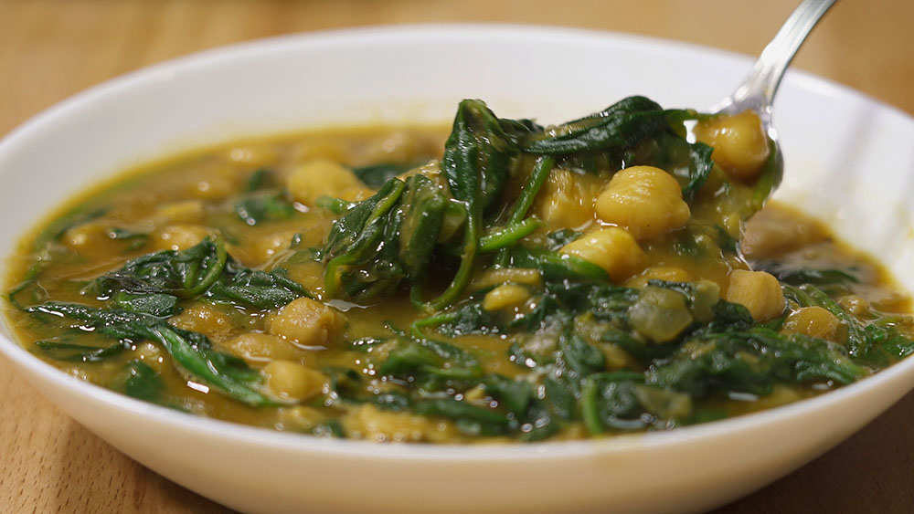

GARBANZOS CON ESPINACAS
Garbanzos con espinacas: por Gorka Barredo
INGREDIENTES 
- 400g de garbanzos
- 500g de espinacas
- 1/2 cebolla
- 2 dientes de ajo
- 1 cucharadita de pimentón dulce
- 1 pizca de comino
- sal y pimienta
- Aceite de oliva
Receta
1.- La noche anterior, ponemos los garbanzos en remojo. Y lo hacemos con abundante agua, que los cubra más que de sobra. Al menos con dos dedos por encima ya que los garbanzos crecerán y absorberán bastante agua. Añadimos una cucharadita de bicarbonato o un puñadito de sal y lo dejamos toda la noche
2.- Al día siguiente, los escurrimos del agua y los introducimos en una olla. Los cubrimos nuevamente con más agua fresca. Lo tampamos y dejamos cocinar alrededor de 2 o 3 horas dependiendo el tipo de garbanzo, hasta que estén blandos. Si utilizas una olla express, su tiempo se reduce, en 30 minutos, más o menos estarán listos.
3.- Mientras se cocinan, preparamos el sofrito que va a acompañar a nuestros garbanzos con espinacas. En una cazuela ponemos un chorrito de aceite y lo vamos a calentar a fuego muy suave. Cuando esté caliente, añadimos los dientes de ajo bien picados. Dejamos que se cocinen aquí arededor de unos 2 minutos. A continuación, agregamos la cebolla también bien picada y salpimentamos. Removemos todos los ingredientes y dejamos que se cocine unos 10 minutos manteniendo el fuego suave.
AROS DE CEBOLLA
Aros de cebolla crujientes: por Gorka Barredo
INGREDIENTES
- 2 cebollas medianas
- 250g de harina
- Unos 300ml de cerveza
- una cucharadita de pimentón dulce
- 1 cucharada de levadura química, tipo Royal
- pan rallado
- Sal
- Aceite de oliva
Receta
1.- Pelamos la cebolla y quitamos la primera capa que, es un poco durita. La cortamos en rodajas finas, de abajo a arriba de la cebolla y de 1cm de grosor, para que queden en forma de aro.
2.- Después, separamos con los dedos las diferentes capas de la cebolla para conseguir los aritos.
3.– Metemos los aros de cebolla en agua fría durante unos 30 minutos. Desechamos aquellas partes que no hayan conservado su forma redonda o que sean demasiado pequeñas para hacer aros de cebolla con ellas (En la cocina, nunca tiramos nada. Estos restos sirven para otra elaboración).
MACARRONES CON CARNE PICADA Y TOMATE
 Macarrones con carne picada y tomate: por Gorka Barredo
Macarrones con carne picada y tomate: por Gorka Barredo
INGREDIENTES PARA 4 PERSONAS:
- 500g de macarrones
- 500g de carne picada o molida. Mejor si es mezcla de ternera y cerdo
- 500g de tomate frito (salsa de tomate)
- 1 cebolla
- 4 dientes de ajo
- orégano seco
- sal y pimienta
- aceite
Receta
1.- Cocemos los macarrones. Para ello, los introducimos en una cazuela con abundante agua hirviendo. Añadimos un buen puñadito de sal y los cocemos durante unos 12-15 minutos. Hasta que estén al dente. Removemos de vez en cuando, sobre todo al principio, para que no se peguen al fondo de la olla
2.- Mientras se cocinan, podemos ir preparando la salsa. En una sartén amplia, ponemos a calentar un chorrito de aceite a fuego medio. Después añadimos la cebolla y los ajos picados muy finos. Salpimentamos y removemos con una cuchara de palo mientras cocinamos durante 5 minutos
3.- Pasado el tiempo, añadimos la carne picada. la salpimentamos y la desmenuzamos con la cuchara de palo para que no queden mazacotes grandes y quede bien suelta. Subimos la fuerza del fuego y la dejamos cocinar hasta que coja algo de color
4.- Una vez hecho esto, añadimos el tomate frito y espolvoreamos con orégano seco. Mezclamos todos los ingredientes y dejamos cocinar 10 minutos más.
GALLETAS DE MANTEQUILLA CASERAS
Galletas de mantequilla caseras: por Gorka Barredo
INGREDIENTES PARA 20 UNIDADES:
- 325g de harina normal.
- 150g de mantequilla con textura de pomada (mantequilla a temperatura ambiente)
- 150g de azúcar
- 2 cucharadas de esencia de vainilla
- 1 huevo
- una pizca de sal
Receta
1.- Lo primero, ponemos la mantequilla a temperatura ambiente en un bol junto al azúcar y lo mezclamos todo con una varilla o con un tenedor.
2.- Cuando tengamos una masa homogénea, añadimos el huevo y las dos cucharadas de esencia de vainilla. Volvemos a mezclar todos los ingredientes hasta que nuevamente haya quedado una masa homogénea
3.- Ahora ponemos la harina y la pizca de sal. Aunque se trate de una elaboración dulce, la sal potenciará el sabor y dejará unas galletas de mantequilla caseras más esponjosas. Mezclamos e integramos todos los ingredientes con la mano. Nos quedará una bola de masa más bien solida, aunque se pegará un poquito a las manos (esto es bueno)
4.- Tapamos la masa y la metemos en el frigorífico. Lo bueno de esta receta, es que no es necesario amasar nada. La dejamos en el frigorífico entre una y dos horas. La idea es que la masa se enfríe y se compacte aunque, no demasiado o costará mucho dar la forma de galleta después.
ARROZ CON LECHE
Arroz con leche: por Gorka Barredo
INGREDIENTES PARA 4 PERSONAS:
- 100g de arroz redondo
- 1l de leche entera
- 1 trozo de cáscara de limón y de naranja
- 1 rama de canela
- canela en polvo
- 70g de azúcar
- 10g de mantequilla
Receta
1.- En una olla o cazuela, ponemos la leche, el arroz, las cáscaras de los cítricos y la rama de canela. Calentamos a fuego medio mientras no dejamos de remover
2.- Cuando esté caliente, pero que no llegue a ebullición, pues la leche pasados los 95-100ºC se quema y coge un regusto muy desagradable, dejamos cocer. Removemos cada cinco minutos, para asegurarnos que el arroz con leche no se pegue y para liberar el almidón. Así nos quedará más cremoso. Recuerda que no debe llegar a hervir a borbotones fuertes en ningún momento
3.- Pasados unos 45 minutos, cuando el grano esté casi hecho – recuerda remover cada 5 minutos – añadimos el azúcar. Dejamos cocinar 10 minutos más, hasta que el arroz ahora sí que sí, esté bien blando